목차
- 데이터 분석과 준비는 입력의 품질·형식·분할을 학습에 맞게 만드는 과정이며, 객체 탐지와 영화 추천 프로젝트의 토대입니다.
- Kubeflow Notebooks는 이미지·자원·저장소·공통 설정을 갖춘 대화형 분석 서버를 관리합니다.
- KFP에서는 작은 설정·결과는 파라미터로, 큰 파일·데이터셋은 아티팩트로 전달합니다. 크기 실험의 수치는 원문 환경의 관찰로 읽어야 합니다.
파트3: 실제 프로젝트에 적용하기
주방 설비를 갖춘 다음 실제 요리를 만드는 과정처럼, 파트3는 앞에서 배운 인프라와 운영 원칙을 머신러닝 프로젝트에 적용합니다. 큰 데이터셋 관리, 신뢰할 수 있는 평가, 실험 추적, 안정된 추론 서비스를 연결하는 단계입니다. 세 캡스톤 가운데 신분증 객체 탐지기와 영화 추천 시스템을 여기서 소개합니다.
Kubeflow Notebooks에서 분석·준비를 하고 영구 볼륨에 자료를 보관합니다. 학습·평가는 파이프라인으로 구성하며 MLflow·TensorBoard에 기록하고, BentoML 같은 도구로 추론 서비스를 제공합니다. 이 장은 그 가운데 데이터 분석과 준비를 맡습니다.
7장 실습 코드
객체 탐지 저장소의 농담 파이프라인은 값 전달을 설명하는 예제입니다. 영화 추천 저장소는 별도의 캡스톤 준비 코드입니다. 같은 장에 연결된 링크라도 프로젝트와 목적이 다릅니다.
들어가며: 데이터 준비가 중요한 이유
재료가 잘못되면 요리법만 바꿔 문제를 해결하기 어렵습니다. 데이터 준비는 형식·레이블·누락·중복·분할을 학습 가능한 상태로 정리하는 과정입니다. YOLO·ResNet에서 LLM·VLM으로 관심이 옮겨가도 입력 품질은 결과 신뢰성의 토대입니다. GIGO라는 격언은 이 관계를 강조합니다.
7장에서 다루는 내용
- 노트북 이미지 빌드와 서버 실행
- 노트북에서의 대화형 데이터 분석
- 파이프라인 데이터 전달과 컴포넌트 작성
- 객체 탐지·영화 추천을 위한 데이터 준비의 출발점
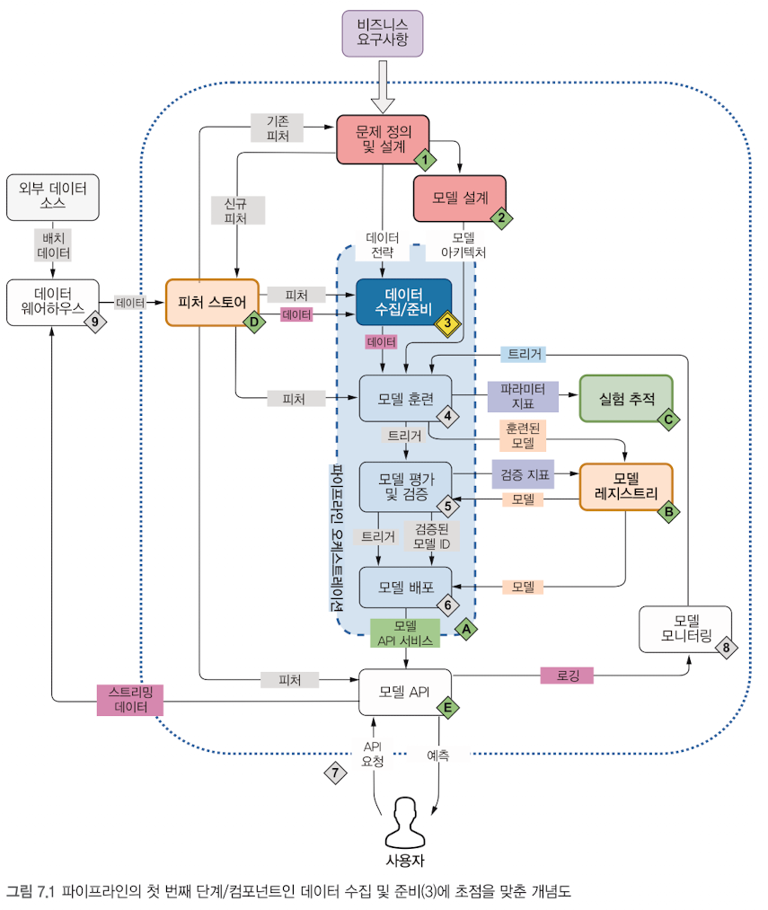
무엇이 보이나요? 전체 수명주기에서 데이터 수집/준비 3번 상자가 진한 파란색으로 강조됩니다. 피처 스토어·학습·평가·배포·추적과 연결되어 있습니다. 왜 중요한가요? 데이터 준비는 학습 전에 한 번 하고 끝나는 일이 아니라 운영 관찰과도 연결됩니다. 읽는 법: 데이터 전략에서 준비와 학습으로 내려가는 화살표, 운영에서 다시 자료가 돌아오는 연결을 따라가세요.
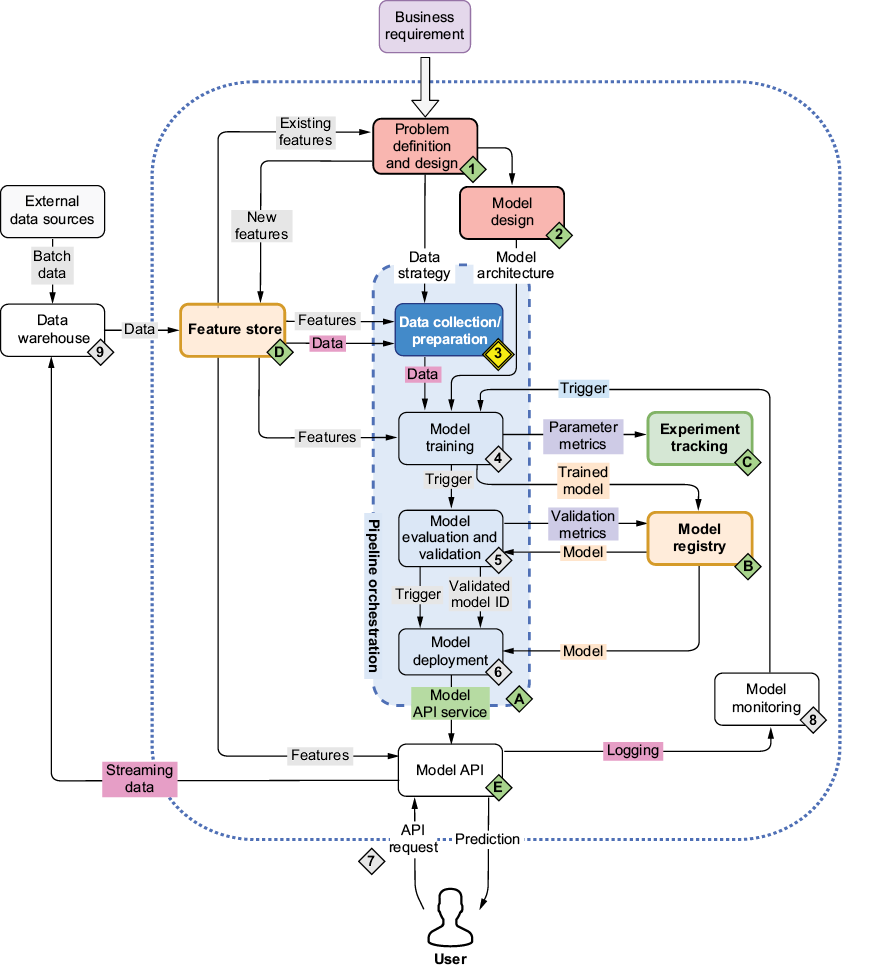
무엇이 보이나요? Data collection/preparation과 3 표식, Feature store와 Model training의 연결이 있습니다. 왜 중요한가요? 한국어 그림과 같은 단계의 영어 용어를 익힐 수 있습니다. 읽는 법: 강조된 상자로 들어오는 Data·Features와 학습으로 나가는 Data를 구분하세요.
캡스톤 프로젝트 1: 신분증 탐지
사진 속 물건에 테두리와 이름표를 붙이듯, 객체 탐지는 위치와 종류를 함께 예측합니다. 프로젝트는 YOLO 변형으로 신분증을 탐지합니다. 이미지와 위치 레이블의 대응, 촬영 조건, 학습·평가 자료의 중복을 살피는 것이 준비 단계의 핵심입니다.
캡스톤 프로젝트 2: 영화 추천
취향 기록표를 정리해 영화를 추천하듯, 추천 시스템은 사용자·영화·평점의 관계를 학습합니다. 원문은 MovieLens 자료를 준비하는 6개 컴포넌트를 하나의 파이프라인으로 연결한다고 소개합니다. 구성 요소의 종류 수와 실제 호출 횟수는 다른 개념입니다.
농담 생성 예제로 개념 먼저 익히기
작은 릴레이부터 연습하면 큰 프로젝트의 연결을 이해하기 쉽습니다. 농담 생성→단어 수 집계→결과 표현을 통해 노트북과 데이터 전달을 먼저 익힙니다. 원문은 프로젝트부터 시작하려면 7.3으로 건너뛸 수 있다고 안내하지만, 제공된 Notion 본문은 7.2.1에서 끝납니다. 이후 캡스톤의 상세 절차는 별도 자료가 필요합니다.
flowchart LR A["데이터 분석과 준비"] --> B["학습과 평가"] B --> C["실험 추적과 등록"] C --> D["추론 서비스"] D --> E["운영 관찰"] E --> A
7.1 데이터 분석
소개: 큐브플로 노트북이 필요한 배경
큰 재료 창고 옆에 작업대를 두면 재료를 멀리 옮길 일이 줄어듭니다. 데이터 가까이에서 분석한다는 것은 저장소와 실행 환경 사이의 전송 시간·비용을 줄이는 배치입니다. Kubeflow Notebooks는 쿠버네티스 위에서 Jupyter·code-server·RStudio 같은 대화형 서버를 관리합니다.
객체 탐지 결과를 눈으로 확인하거나 노트북에서 잠시 추론하는 작업은 순서가 고정된 배치 처리와 다릅니다. GPU·큰 메모리를 필요한 때 요청하고 사용 후 회수하는 운영도 필요합니다. 가까운 데이터 배치나 유휴 종료는 도구 이름만으로 결정되지 않으며 네트워크·노드·정책을 함께 구성해야 합니다.
배포와 비슷한 라이브러리·이미지로 분석하면 개발 환경에서만 성공하는 문제를 줄일 수 있습니다. 같은 CI에서 노트북·파이프라인·배포 이미지를 만들고 버전·digest를 관리하는 이유입니다. 수동으로 셀을 실행한 기록과 반복 가능한 ETL 파이프라인은 구분합니다.
학습 순서
샘플 서버 실행 → 내부 구성 이해 → 기본값 변경 → 호환 이미지의 조건 → 커스텀 이미지 구성 순서로 읽으세요. 원문은 UI 설명 전에 경량 대체 설치를 소개합니다. 이 대체 환경에는 UI가 없으므로 뒤의 생성 화면과 같은 설치라고 생각하면 안 됩니다.
flowchart TD U["대화형 탐색"] --> N["Kubeflow Notebooks"] N --> I["이미지와 라이브러리"] N --> R["CPU 및 메모리와 가속기"] N --> V["워크스페이스와 데이터 볼륨"] N --> P["공통 설정과 배치 정책"] I --> E["반복 가능한 ETL과 KFP"] V --> E
Kubeflow Notebooks 경량 설치: 선택적 대체 경로
전체 건물 대신 작업실과 접수 창구만 만드는 방식입니다. 원문의 환경은 standalone KFP 백엔드 2.4.1만 있고 Central Dashboard·Jupyter Web App·Istio·Profile은 없습니다. notebook-controller와 PodDefault 웹훅을 설치하고 CR을 직접 작성해 서버·볼륨·설정 원리를 재현합니다. 원문이 ‘필수 실습 X’로 표시한 선택적 경로입니다.
전체 UI 배포와 경량 배포의 차이는 실행 원리보다 제공되는 관리 화면·네트워크·사용자 관리 구성에 있습니다. 이 절은 설치 묶음의 목적과 핵심 필드를 설명합니다.
핵심 개념: 라벨과 설정 주입의 두 관문
건물 출입 조건과 직원별 장비 지급 조건은 서로 다릅니다. 웹훅은 먼저 네임스페이스가 호출 대상인지 보고, 그 안의 파드 라벨이 PodDefault selector에 맞는지 봅니다. 원문 설치는 app.kubernetes.io/part-of=kubeflow-profile 라벨의 네임스페이스만 대상으로 합니다. Profile이 없는 경량 환경에서는 이 라벨을 직접 준비합니다.
공식 Notebooks v1.11.0 컨트롤러는 Notebook의 루트 metadata.labels를 파드에 복사합니다. 따라서 add-ml-env: "true"가 selector와 맞으면 MLFLOW_TRACKING_URI·KF_PIPELINES_ENDPOINT 등이 주입됩니다. 주소 주입은 위치를 알려 주는 일이며 네트워크·인증 성공까지 뜻하지는 않습니다.
원문 배포 기록은 PodDefault 웹훅 v2.0.0, notebook-controller·Jupyter SciPy 이미지 v1.11.0, KCD 26.03.1입니다. PodDefault 위치는 applications/dashboard/upstream/poddefaults-webhooks입니다. 이 버전 조합은 원문 환경의 기록이며 다른 배포판의 호환 조건은 따로 확인합니다.
flowchart TD
A["새 파드 생성 요청"] --> B{"namespaceSelector 일치"}
B -- "아니요" --> X["이 웹훅 생략"]
B -- "예" --> C["같은 네임스페이스 PodDefault 조회"]
C --> D{"파드 라벨과 selector 일치"}
D -- "예" --> E["env와 볼륨 설정 패치"]
D -- "아니요" --> F["해당 설정 미주입"]pdw.yaml: 파드 공통 설정을 주입하는 설치 묶음
신청서 양식과 자동 작성 창구를 함께 설치하는 문서입니다. 큰 YAML의 대부분은 PodDefault가 허용하는 필드의 CRD 스키마이며, 나머지는 웹훅 운영 자원입니다.
| 자원 | 핵심 역할 |
|---|---|
| CRD | poddefaults.kubeflow.org 종류, v1alpha1, selector·env·volumes·volumeMounts 스키마 |
| ServiceAccount·Role·Binding | 웹훅의 실행 신원과 조회 권한, admin/edit/view 역할 연결 |
| Deployment·Service | 웹훅 컨테이너와 HTTPS 접속점 |
| Issuer·Certificate | cert-manager의 인증서 발급·Secret 저장 |
| NetworkPolicy | 네트워크 플러그인이 지원하는 접근 제한 |
| MutatingWebhookConfiguration | pods의 CREATE, /apply-poddefault, namespaceSelector·CA·failurePolicy |
CRD는 ‘이런 종류가 있다’는 양식입니다. 실제 설정은 같은 네임스페이스의 PodDefault CR이 정합니다.
⚠ 원문 정정: CRD가 특정 네임스페이스에 정의된다고 설명하면 안 됩니다. CRD는 클러스터 범위이며, PodDefault CR이 네임스페이스 범위입니다.
nbc.yaml: Notebook 신청서를 실행 서버로 바꾸는 설치 묶음
실행 담당자의 권한과 운영 설정을 묶은 문서입니다. notebooks.kubeflow.org CRD의 큰 부분은 파드·컨테이너·볼륨·보안·probe 필드 스키마입니다. 실제 Notebook에서 볼 핵심은 spec.template.spec.containers의 image·resources·volumeMounts와 volumes입니다.
| 설정·자원 | 의미 |
|---|---|
| ServiceAccount·RBAC | Notebook·StatefulSet·Service·상태 조회와 변경 권한 |
| leader election | 여러 담당자가 같은 조정을 중복하지 않도록 대표 선정 |
USE_ISTIO: false |
경량 환경은 Istio 라우팅 대신 Service 포트 포워딩 사용 |
ENABLE_CULLING: false |
원문 환경의 유휴 종료가 꺼져 있음 |
CULL_IDLE_TIME: 1440 |
유휴 판단 시간 설정, 이 값만으로 종료가 켜지지는 않음 |
IDLENESS_CHECK_PERIOD: 1 |
유휴 점검 간격 설정 |
/healthz·/readyz |
컨트롤러 생존·준비 상태 접속점 |
스키마 안의 오래된 저장소 필드나 링크가 남아 있다고 현재 클러스터가 그 구현을 지원한다는 뜻은 아닙니다.
렌더링 참고: Kustomize와 적용 방식
공통 양식에 환경별 옵션을 더해 최종 신청서를 만드는 과정입니다. Kustomize 5.8.3을 사용한 원문은 인증서 구성의 pdw.yaml과 Istio를 끈 nbc.yaml을 생성합니다. 큰 CRD는 client-side apply가 저장하는 last-applied annotation에 걸릴 수 있어 server-side apply가 유용합니다.
--force-conflicts는 필드 소유권 충돌을 덮어쓰는 옵션입니다. 단순히 오류를 없애는 마법의 설정으로 생각하지 말고, 다른 관리자의 변경과 충돌하는 필드인지 확인해야 합니다.
노트북 설치/사용 가이드
1. 접속: SSH 터널과 포트 포워딩
원격 분석실로 이어지는 임시 직통 전화입니다. 로컬 브라우저→SSH 터널→Kubernetes Service 포트 포워딩→노트북 서버로 요청을 연결합니다. 접속 형태는 http://localhost:<LOCAL_PORT>/notebook/<NAMESPACE>/<NOTEBOOK_NAME>/lab입니다. NB_PREFIX 접두 경로가 맞지 않으면 404가 날 수 있습니다. 접속 계정과 서버는 <SSH_USER>·<REMOTE_HOST>로 바꿉니다.
2. 노트북 서버 추가
이름·이미지·자원·PVC를 바꿔 독립된 서버를 요청합니다. 원문은 PVC 5Gi/RWO와 Notebook을 별도 객체로 같은 YAML에 선언하고, CPU requests 500m·메모리 1Gi, limits CPU 2·메모리 4Gi를 사용합니다.
⚠ 원문 정정: Notebook CR 하나가 PVC까지 자동으로 만든다고 일반화하지 않습니다. 이 경량 예제는 PVC를 별도로 선언하며, 컨트롤러는 StatefulSet·Service를 만들고 그 claim을 연결합니다. UI의 새 PVC 생성은 별도의 과정입니다.
3. PodDefault 사용과 변경
새 네임스페이스의 대상 라벨·PodDefault·파드 라벨을 함께 맞춥니다. 원문 웹훅은 생성 요청에 작동하므로 기존 파드에는 변경이 소급 적용되지 않습니다. failurePolicy: Fail이면 웹훅 장애가 대상 파드 생성 실패로 이어질 수 있습니다.
4. 노트북에서 KFP와 패키지 사용
주입한 endpoint는 kfp.Client()가 접속 위치를 찾는 데 쓰입니다. 원문은 실험 2개·파이프라인 4개 조회와 MLflow/Jupyter API의 정상 응답을 보고합니다. 이는 해당 환경의 실행 기록입니다.
⚠ 원문 정정: pip 설치물이 모두 워크스페이스에 남는 것은 아닙니다. 설치 위치가 PVC에 포함된 사용자 설치 경로나 가상환경이어야 유지됩니다. 의존성을 커스텀 이미지에 포함하는 방법도 있습니다.
5. 정리
Notebook을 제거해 실행 자원을 회수하고, PVC는 데이터가 필요한지 판단해 별도로 처리합니다. PVC 삭제와 실제 저장 데이터 삭제의 관계는 PV 회수 정책에 달려 있습니다.
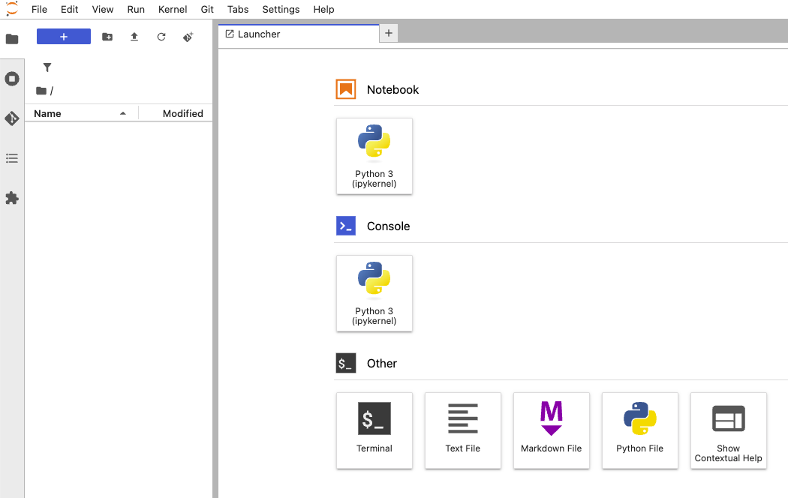
무엇이 보이나요? 빈 파일 목록, Python 3 Notebook·Console, Terminal·텍스트/마크다운/Python 파일 버튼이 있습니다. 왜 중요한가요? 경량 경로에서도 브라우저 분석 환경까지 연결한 원문 사례입니다. 읽는 법: Notebook은 셀 작업, Terminal은 셸, 왼쪽은 파일 목록입니다. 빈 목록만으로 새 PVC가 원인이라고 확정할 수는 없습니다.
⚠ 원문 정정: 이 화면은 빈 파일 목록을 보여 줍니다. 새 PVC 때문이라는 원인 설명은 화면 자체로 확인되지 않으며, 연결된 PVC와 저장 경로를 따로 확인해야 합니다.
7.1.1 큐브플로 노트북 서버 실행하기
분석실 예약 신청서에 방·도구·좌석을 적는 과정입니다. UI의 NEW NOTEBOOK은 파일 하나를 만드는 버튼이 아니라 이미지·자원·저장소를 갖춘 서버를 요청하는 버튼입니다. 네임스페이스는 할당량·PVC·Secret의 사용 범위에 영향을 주므로 먼저 선택합니다.
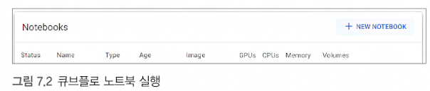
무엇이 보이나요? NEW NOTEBOOK과 상태·이름·타입·이미지·GPU·CPU·메모리·볼륨 열이 있습니다. 왜 중요한가요? 노트북이 자원을 소비하는 서버라는 사실을 보여 줍니다. 읽는 법: 버튼은 새 서버 신청, 각 행은 이미 생성된 서버입니다.
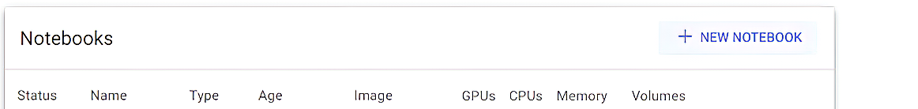
무엇이 보이나요? 상태와 자원 열, NEW NOTEBOOK 버튼이 있는 영어 UI입니다. 왜 중요한가요? 생성 뒤 확인할 위치와 영어 항목을 연결할 수 있습니다. 읽는 법: Status와 Image, 자원 열을 묶어 실행 상태와 환경을 살피세요.
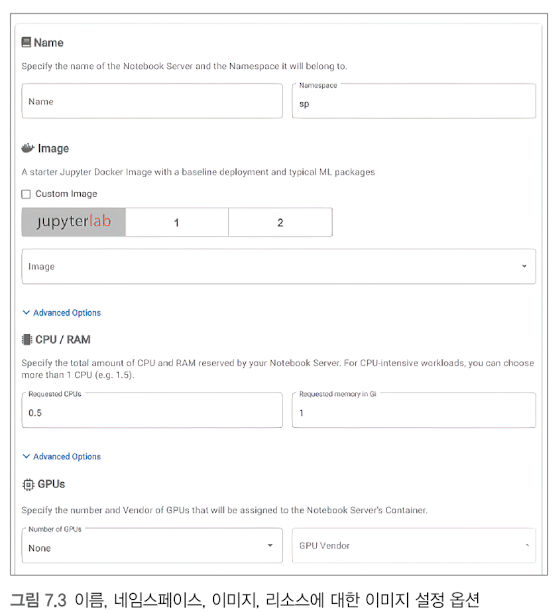
무엇이 보이나요? 이름·네임스페이스, 이미지 그룹, CPU 0.5·메모리 1Gi·GPU None이 보입니다. 왜 중요한가요? 분석 목적에 맞는 환경을 생성 전에 정합니다. 읽는 법: 화면 값은 예시이며 이미지·CPU·메모리·가속기 요구를 함께 검토하세요.
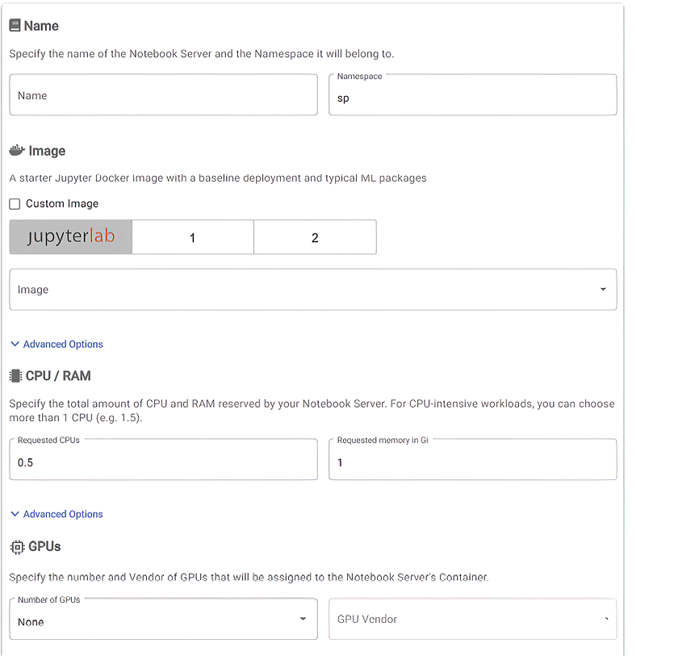
무엇이 보이나요? jupyterlab/1/2 그룹 탭과 이미지 선택, CPU/RAM·GPU 항목이 있습니다. 왜 중요한가요? 런타임 종류와 자원 요청은 별도 선택입니다. 읽는 법: 그룹 탭이 GPU 수량을 결정하는 것은 아닙니다. 필요한 가속기는 따로 요청합니다.
requests는 배치 시 사용할 자원 요청량, limits는 실행 제어 상한입니다. CPU 초과는 제한, 메모리 초과는 OOM 종료로 나타날 수 있습니다. GPU·TPU는 장치 플러그인과 노드 자원이 있어야 하며, 유휴 서버를 계속 두면 예약 자원도 계속 점유할 수 있습니다.
flowchart TD A["UI 또는 Notebook CR"] --> B["Notebook 컨트롤러"] B --> C["StatefulSet"] B --> D["Service"] C --> E["노트북 파드"] F["별도 PVC"] --> E D --> E
앱과 Istio proxy가 함께 준비된 구성은 2/2 Ready로 보일 수 있습니다. 일반 초기화 컨테이너와 준비된 앱 컨테이너 수는 구분합니다. 원문의 Istio 없는 경량 환경은 1/1 Running입니다. 숫자만으로 Istio 존재를 확정하지 말고 컨테이너 이름을 확인하세요.
7.1.2 워크스페이스와 데이터 볼륨
개인 서랍과 공동 자료 창고를 구분하듯, 워크스페이스는 사용자 파일·설정용이고 데이터 볼륨은 분석 자료를 추가 연결하는 용도입니다. PVC는 저장 공간 요청, PV는 이를 제공하는 볼륨 자원, StorageClass는 제공 방식을 나타냅니다. 마운트는 그 공간을 컨테이너 경로에 연결하는 일입니다.
UI는 새 워크스페이스 PVC를 만들거나 기존 것을 재사용할 수 있습니다. 데이터 볼륨도 보통 기존 PVC를 연결하며, 지원되는 UI에서는 새로 만들 수 있습니다. 마운트 위치는 사용하는 이미지에 맞춰 <WORKSPACE_MOUNT_PATH>로 정합니다.
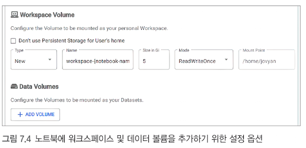
무엇이 보이나요? 새 워크스페이스 설정 New·5Gi·ReadWriteOnce, 마운트 위치와 ADD VOLUME 버튼이 있습니다. 왜 중요한가요? 개인 파일 보관 공간과 추가 자료 연결을 구분합니다. 읽는 법: New/Existing은 새 PVC/기존 PVC 선택이며 용량·접근 모드·마운트 경로를 함께 읽습니다.
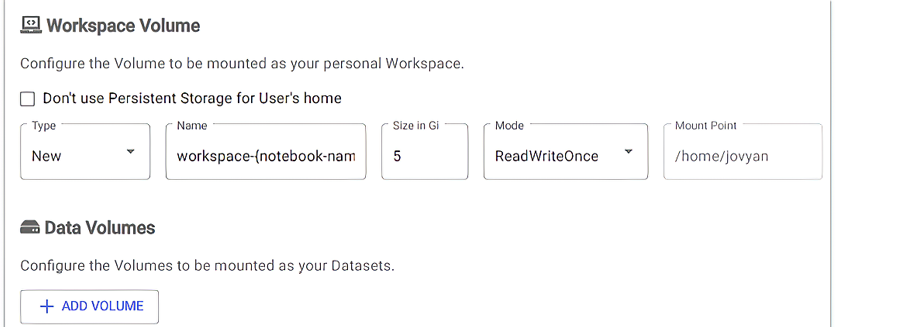
무엇이 보이나요? 사용자 홈의 영구 저장 여부, Workspace Volume과 Data Volumes 항목이 있습니다. 왜 중요한가요? 컨테이너가 바뀌어도 파일을 유지할 저장소를 선택하는 자리입니다. 읽는 법: 저장 여부를 끄면 사용자 파일의 수명이 달라집니다. 기존 볼륨 재사용과 파드 재사용은 같은 뜻이 아닙니다.
RWO는 한 노드에서 읽기·쓰기 가능한 접근 모드입니다. 한 노드의 여러 파드가 사용할 수 있으므로 한 파드 전용이라는 뜻은 아닙니다. 한 파드 제한은 지원되는 CSI의 RWOP를 검토합니다. PVC를 삭제했을 때 실제 데이터가 남는지는 회수 정책에 달려 있습니다.
flowchart LR A["PVC 저장 요청"] --> B["PV와 저장소"] B --> C["파드에 마운트"] C --> D["사용자 파일 기록"] D --> E["파드 교체"] E --> F["남아 있는 같은 PVC 연결"]
7.1.3 설정 및 어피니티/톨러레이션
신입 직원에게 기본 장비를 지급하는 규칙처럼, PodDefault는 파드 라벨 조건에 맞는 환경변수·볼륨 등의 공통 설정을 추가합니다. UI의 Configurations 선택은 보통 Notebook에 selector 라벨을 부여하는 것으로 연결됩니다. 웹훅이 새 파드를 만들 때 이를 적용합니다.
Listing 7.1: PodDefault 예제
핵심 구조는 다음과 같습니다. 접속 주소·네임스페이스는 환경에 맞게 바꾸는 설명용 예시입니다.
apiVersion: kubeflow.org/v1alpha1
kind: PodDefault
metadata:
name: add-proxy-vars
namespace: <NAMESPACE>
spec:
desc: add proxy variables
selector:
matchLabels:
add-proxy-vars: "true"
env:
- name: http_proxy
value: <PROXY_URL>
- name: https_proxy
value: <PROXY_URL>
- name: no_proxy
value: <NO_PROXY_LIST>
- name: MLFLOW_TRACKING_URI
value: <MLFLOW_SERVICE_URL>
desc는 선택지를 설명하고 selector는 적용 대상을 고릅니다. 환경변수·볼륨·Secret 참조를 통해 프로젝트 기본 설정을 제공할 수 있습니다.
⚠ 원문 정정: 설명용 코드에 섞인 별표 강조 표시는 YAML 문법이 아닙니다. 위 예시는 강조 표시를 제거했습니다. PodDefault와 파드는 같은 네임스페이스에 있어야 합니다.
어피니티와 톨러레이션: 선택과 허가
원하는 방을 고르는 조건이 어피니티, 출입 제한을 통과하는 허가가 톨러레이션입니다. 노드 어피니티는 노드 라벨을 사용합니다. 톨러레이션은 테인트를 허용하지만 해당 노드로 끌어당기지 않습니다. NoSchedule은 새 배치를 제한하고, PreferNoSchedule은 가능하면 피하며, NoExecute는 기존 파드 퇴거에도 영향을 줍니다.
⚠ 원문 정정: 노드 어피니티의 대상 선택은 애노테이션이 아니라 노드 라벨 조건입니다.
GPU 노드에는 관리자가 예를 들어 dedicated=gpu:NoSchedule 테인트와 가속기 라벨을 설정합니다. GPU 파드는 매칭 톨러레이션·노드 선택 조건과 실제 GPU 자원 요청을 함께 갖춰야 합니다. GPU Operator가 모든 환경에서 특정 테인트를 자동 추가한다고 가정하지 않습니다.
⚠ 원문 정정: GPU Operator가 항상 특정 테인트를 자동으로 추가한다는 설명은 일반 규칙으로 확인되지 않았습니다. 위 테인트는 관리자가 설정하는 예이며, 설치별 자동 동작은 공식 문서로 재확인 필요합니다.
flowchart LR
A["GPU 작업 요청"] --> B["노드 라벨 조건"]
B --> C["테인트에 맞는 톨러레이션"]
C --> D["GPU와 CPU 및 메모리 가용량"]
D --> E{"조건 충족"}
E -- "예" --> F["스케줄링"]
E -- "아니요" --> G["Pending과 이벤트 확인"]공유 메모리·Launch·CRD 조회
공용 화이트보드처럼 여러 프로세스가 같은 메모리 공간을 사용할 수 있습니다. /dev/shm에 메모리 기반 emptyDir를 연결하는 방식은 RAM을 사용하며 영구 저장소가 아닙니다. 분산 훈련·데이터 로더에는 유용할 수 있지만 메모리 예산도 고려합니다.
Launch 뒤에는 저장소 연결·스케줄링·이미지 준비·컨테이너 시작을 확인합니다. CRD 목록과 실제 Notebook 목록은 다릅니다.
⚠ 원문 정정:kubectl get crd는 리소스 종류의 정의를 보여 줍니다. 생성한 서버 객체는kubectl get notebooks -n <NAMESPACE>로 조회합니다.
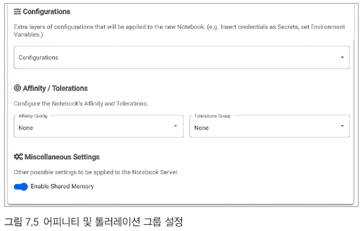
무엇이 보이나요? Configurations, Affinity Config None, Tolerations Group None, 켜진 Shared Memory 토글입니다. 왜 중요한가요? 설정 주입·노드 배치·공유 메모리가 별도 선택임을 보여 줍니다. 읽는 법: None은 이 폼의 선택 값입니다. 다른 정책이나 자원 제약까지 없다는 뜻은 아닙니다.
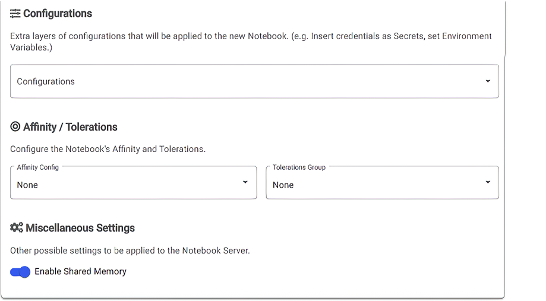
무엇이 보이나요? 추가 설정 설명과 두 None 선택, Enable Shared Memory가 있습니다. 왜 중요한가요? 환경변수·자격증명 설정과 노드 선택을 연결할 수 있습니다. 읽는 법: Configurations는 공통 설정, 아래 두 항목은 스케줄링 조건으로 구분하세요.
7.1.4 메뉴 커스터마이징
관리자가 예약 신청서의 선택지를 정하는 과정입니다. jupyter-web-app-config로 시작하는 ConfigMap의 spawner_ui_config.yaml·spawnerFormDefaults는 Jupyter Web App이 사용할 기본값·이미지·자원·배치 옵션을 담습니다. 컨트롤러는 생성된 Notebook의 실행 상태를 관리합니다.
⚠ 원문 정정: 메뉴 옵션을 화면에 제공하는 소비자는 Jupyter Web App입니다. Notebook 컨트롤러가 이 화면을 직접 표시하는 것은 아닙니다.
value는 기본 선택이고 readOnly는 UI에서 수정 가능 여부를 정합니다. 읽기 전용 화면은 다른 API로 CR을 만드는 권한까지 막지 않으므로 RBAC·admission 정책과 구분합니다.
사용자에게 표시되는 이미지 커스터마이징: Listing 7.2
검토한 작업실 설계도만 목록에 두면 일관된 환경을 선택하기 쉽습니다. image는 Jupyter, imageGroupOne은 code-server, imageGroupTwo는 RStudio 그룹입니다. 공식 v1.9·v1.10·Notebooks v1.11 설정 파일에서 그룹별 value·options 구조를 확인할 수 있습니다.
spawnerFormDefaults:
image:
value: <JUPYTER_IMAGE>
options: [<JUPYTER_IMAGE>]
imageGroupOne:
value: <CODESERVER_IMAGE>
options: [<CODESERVER_IMAGE>]
imageGroupTwo:
value: <RSTUDIO_IMAGE>
options: [<RSTUDIO_IMAGE>]
⚠ 원문 정정: Listing 7.2의 추가 이미지 그룹을 단순 리스트로 옮기지 않습니다. 위처럼 기본값과 선택 목록을 가진 객체로 읽고, 설치된 ConfigMap의 버전별 형식을 확인합니다. 오래된 이미지 태그는 현재 권장값과 구분합니다.
CI에서 만든 이미지를 배포 설정의 목록에 추가하고 제거하면 사용자 선택도 배포 흐름과 연결됩니다. digest·의존성 버전 관리가 함께 필요합니다.
flowchart TD A["Jupyter Web App ConfigMap"] --> B["spawnerFormDefaults"] B --> C["이미지 그룹과 기본값"] B --> D["자원과 배치 옵션"] C --> E["생성 폼"] D --> E E --> F["Notebook CR"]
어피니티와 톨러레이션 그룹: Listing 7.3
신청서에 작업실 종류를 선택하도록 두는 설정입니다. affinityConfig.options의 항목은 configKey·displayName·affinity로 구성되며, tolerationGroup은 테인트 허용 조건을 묶습니다.
affinityConfig:
value: small-cpu-selector
options:
- configKey: small-cpu-selector
displayName: small-cpu-node
affinity:
nodeAffinity:
requiredDuringSchedulingIgnoredDuringExecution:
nodeSelectorTerms:
- matchExpressions:
- key: compute
operator: In
values: [small]
원문은 small·xl 라벨의 선택지를 소개합니다. required는 배치 시 반드시 충족, preferred는 가능하면 선호라는 차이가 있습니다. IgnoredDuringExecution은 배치 뒤 라벨 변경만으로 이 규칙이 곧바로 퇴거시키지는 않는다는 의미입니다.
⚠ 원문 정정: compute=small 필수 조건의 노드가 꽉 차면 파드는 Pending입니다. 고성능 노드로 자동 이동하지 않습니다. 대체 배치를 원하면 후보를 함께 허용하고 선호 조건을 설계해야 합니다.
도전과제: K8s 고급 스케줄링 실습 따라해보기
출입 허가증과 방 선택 규칙을 실제 배치에 적용해 보는 연습입니다. 원문의 고급 스케줄링 링크는 Notion 앱 페이지로 연결되며, 이 장에서는 그 본문을 옮기지 않았습니다. 따라 하려면 해당 페이지와 공식 문서를 함께 보세요.
어피니티는 배치 후보, 톨러레이션은 제한 허용, 자원 요청은 가용량 조건이라는 세 역할을 구분하는 것이 이 주제의 학습 목적입니다. 선택한 노드와 Pending 이벤트를 비교하면 조건이 어떤 단계에서 영향을 주는지 이해할 수 있습니다. 이 설명은 링크 속 과제의 명령을 대신 옮긴 절차가 아닙니다.
7.1.5 큐브플로 커스텀 노트북 이미지 생성하기
기본 작업실에 프로젝트 도구를 더하는 방식입니다. 커스텀 노트북 이미지는 의존성·code-server/Jupyter 런타임·서버 시작 설정을 함께 갖춥니다. Python 패키지만 설치했다고 브라우저 노트북 서버가 되는 것은 아닙니다.
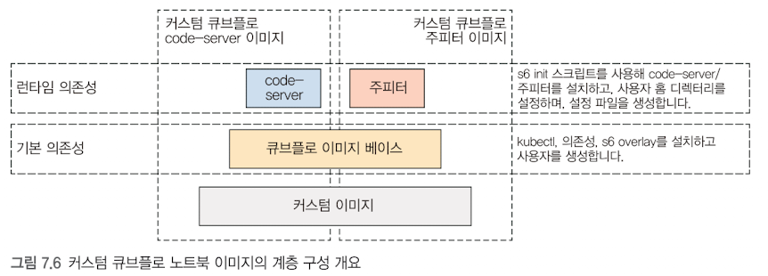
무엇이 보이나요? 아래 Custom image, 중간 Kubeflow image base, 위 code-server/Jupyter와 기본·런타임 의존성 설명이 있습니다. 왜 중요한가요? 앱 실행과 Kubeflow 호환에 필요한 공통 기반을 구분합니다. 읽는 법: code-server와 Jupyter는 두 런타임 선택지입니다. 베이스의 kubectl·s6·사용자 설정과 런타임 기동 설정을 나누어 읽으세요.
무엇이 보이나요? Custom image→Kubeflow image base→Code-server 또는 Jupyter의 층입니다. 왜 중요한가요? 두 런타임이 같은 공통 기반을 이용하는 구조입니다. 읽는 법: 두 런타임을 반드시 한 이미지에 모두 넣는다는 뜻은 아닙니다.
원문은 베이스 이미지를 인수로 받는 멀티스테이지 Dockerfile을 소개합니다. 빌드 단계와 최종 실행 단계를 분리하면 불필요한 빌드 도구를 줄일 수 있습니다. 사용자 쓰기 권한·홈 마운트·서버 포트·NB_PREFIX와 s6 시작 설정을 함께 맞춥니다. 실제 Dockerfile 전체와 빌드 결과는 제공된 본문에 없으므로 설치 이미지의 계약을 확인해야 합니다.
flowchart BT A["프로젝트 의존성을 가진 커스텀 기반"] --> B["Kubeflow 호환 기반과 사용자 및 s6"] B --> C["Jupyter 런타임과 시작 설정"] B --> D["code-server 런타임과 시작 설정"] C --> E["노트북 서버 이미지"] D --> E
노트북에서 구조화된 ETL과 KFP로
노트북은 익숙한 탐색 도구이고, ETL·KFP는 그 작업을 반복 가능한 순서로 옮기는 도구입니다. Git에 이미지·코드를 관리하고 같은 CI에서 환경을 준비하면 탐색에서 자동 실행으로 넘어갈 때 환경 차이를 줄일 수 있습니다.
7.2 데이터 전달
소개: 격리된 컴포넌트 사이의 연결
서로 다른 방에 있는 작업대는 같은 서랍을 공유하지 않습니다. 이 장의 KFP 컴포넌트는 각각 격리된 컨테이너·파드에서 실행되므로 앞 파드의 파일 경로 문자열만 전달해도 뒤 파드에 파일이 생기는 것은 아닙니다.
작은 메모는 파라미터, 큰 상자는 아티팩트로 전달합니다. 파라미터는 문자열·정수·실수·불리언·JSON으로 표현 가능한 list/dict 같은 값입니다. 데이터셋·배열·모델·보고서는 파일로 작성해 아티팩트 계약에 따라 전달하는 편이 적합합니다.
.output은 컴파일 시 이미 계산된 값이 아니라 상류 태스크 출력 연결입니다. 컴파일러가 DAG에 이 참조를 기록하고 실행 때 실제 값이 채워집니다. .outputs[...]는 이름별 출력 연결을 표현합니다.
flowchart TD
A["상류 결과"] --> B{"결과의 성격"}
B -- "작은 설정과 집계" --> C["파라미터 직렬화"]
C --> D["하류 값 입력"]
B -- "파일과 데이터셋" --> E["출력 아티팩트 path에 기록"]
E --> F["저장소 업로드와 URI 등록"]
F --> G["하류 실행에 파일 준비"]
G --> H["입력 아티팩트 path에서 읽기"]파일을 쓰는 상류의 .path는 실행 컨테이너의 로컬 경로, .uri는 저장소 식별 주소입니다. 하류는 준비된 자신의 .path에서 읽습니다. 같은 아티팩트의 로컬 경로가 파드마다 다를 수 있습니다. URI 문자열만 직접 넘기는 방식은 파일 접근·권한을 별도로 구현해야 합니다. PVC 공유도 가능한 별도 설계지만 여기의 저장소 기반 전달과 구분합니다.
크기 한계는 여러 문을 통과하는 문제
| 경로 | 읽는 법 |
|---|---|
| 실행 명령 인자 | 전체/개별 인자와 환경 길이가 영향을 줄 수 있음 |
| Kubernetes annotation | 키·값 바이트 합계 한도 256KiB=262144바이트 |
| MLMD gRPC | 해당 서비스의 메시지 크기 설정과 전송 표현이 영향 |
⚠ 원문 정정: 원문의 실패 크기는 특정 환경의 관찰입니다. 이를 모든 KFP 파라미터의 단일 상한으로 사용하지 않습니다. 100KB 실패를 별도 근거 없이 128KiB 단일 인자 한도로 확정할 수도 없습니다.
실습: 큰 데이터는 값이 아니라 경로로 (KFP v2 Data passing)
같은 크기의 짐을 메모 봉투와 창고 배송으로 보내 보는 비교입니다. 목적은 입력의 작은 설정값과 전달할 큰 내용을 분리하는 데 있습니다.
실습 환경
원문은 kind 클러스터, KFP 백엔드 2.4.1, SDK 2.9.0, Python 3.11, ch07-data-passing 실험을 사용하고 캐시를 껐습니다. 접속 주소는 <KFP_SERVICE_URL>입니다. 캐시 OFF는 이전 결과 재사용을 막는 설정이며 난수 고정과는 다릅니다.
이 실습이 다루는 범위
A1 값 전달, A2 경로 전달, A2b 크기 비교, A3 v1→v2 수정, A4 아티팩트 타입을 살핍니다. SlicedClassificationMetrics는 제외되었습니다. 관련 주제를 다룬 이 실습은 있지만 7.2.2·7.2.3·7.3의 독립 본문은 제공된 원문에 없습니다.
이 실습은 A1(값 전달) → A2(파일 전달) → A2b(크기 비교) → A3·A4(파일 경로와 타입) 순서로 진행됩니다. 아래에서 실험마다 코드 → 컴파일 결과 → 실행 결과를 함께 봅니다.
먼저 알아 둘 개념: 실행 코드·저장 위치·타입
상자의 내용과 송장은 서로 다릅니다. .path에 실제 내용을 쓰고, URI·타입·metadata는 내용의 위치와 성격을 설명합니다. 원문 런처의 경로는 /minio/mlpipeline/v2/artifacts/<PIPELINE>/<RUN_ID>/<TASK>/<EXECUTION_UUID>/<ARTIFACT_NAME>입니다. 이는 해당 배포 구성이지 모든 KFP의 고정 경로는 아닙니다. output_jokes/jokes.txt는 객체 저장소 키 접두사 구조입니다.
컴파일된 YAML은 deploymentSpec.executors에 이미지·명령·함수 코드를 포함합니다. 실행 시 의존성 준비→ephemeral_component.py 생성→executor_main 순서로 이어집니다. SDK 2.9.0 기본 이미지는 python:3.8, 원문 수정 예제는 3.11, 다른 생성 출력은 3.9와 SDK 2.11.0입니다. 같은 버전의 결과로 섞어 읽지 마세요.
A4의 일곱 타입은 Dataset·Model·Metrics·ClassificationMetrics·HTML·Markdown·Artifact입니다. system.* schemaTitle은 MLMD의 타입 이름입니다. samples·shape 같은 metadata는 파일 본문을 설명하는 작은 속성입니다.
⚠ 원문 정정: Metrics 계열에 파일이 있을 수 없다는 뜻은 아닙니다. 원문 실험의 지표 로깅 메서드가 metadata를 기록했고 MinIO에 별도 파일이 없었던 결과로 한정합니다.
실습 파일의 역할: 수정 → 컴파일 → 제출
작업 지침을 고친 뒤 실행 주문서를 다시 만드는 과정입니다. a*.py를 수정하고 컴파일해 YAML을 만든 다음 제출합니다. submit.py는 key=value 파라미터를 받아 같은 파이프라인에 다른 입력을 보냅니다. 컴파일은 실행이 아니라 명세 생성입니다.
이 장은 각 파일의 목적과 읽을 필드를 설명합니다. 실행 명령 전체와 환경 준비는 별도 핸즈온 절차를 따릅니다.
공통 도구 ① inspect_yaml.py — 컴파일된 YAML 점검 (선택)
주문서를 실제 실행 전에 읽어 보는 도구입니다. yaml.safe_load_all로 YAML 문서를 읽고 이름·SDK 버전·executor 명령·pip 설치·임시 파일 주입·아티팩트 schemaTitle을 보여 줍니다. 구조가 있다는 확인과 실행이 성공했다는 확인은 다릅니다.
찾을 항목은 deploymentSpec.executors.<executor>.container와 그 command·args·image입니다. 임시 코드 파일 생성이 들어 있는지 보면 함수 소스가 실행 환경으로 옮겨지는 구조를 이해할 수 있습니다.
공통 도구 ② submit.py — 제출하고 끝까지 기다리기
주문서를 접수하고 완료 상태를 확인하는 담당자입니다. 컴파일 YAML을 KFP에 제출하고 실험에 연결하며, 캐시를 끄고 종료까지 기다린 뒤 태스크 상태·로그를 표시합니다. JSON으로 해석할 수 있는 key=value는 해당 타입으로, 나머지는 문자열로 처리합니다. timeout과 로그 생략 옵션은 기다림·출력을 제어합니다.
⚠ 원문 정정: 원문의 접이식 제목에는summit.py라고 적혀 있지만 사용 설명과 파일 목록의 실제 이름은submit.py입니다. 실행 파일을 찾을 때 후자를 사용합니다.
A1. 단순 값으로 전달하기
이 실험의 질문: 작은 문자열과 정수는 값(파라미터)으로 충분한가?
코드: a1_values_pipeline.py
농담을 쓰는 사람→단어를 세는 사람→결과를 표현하는 사람의 릴레이를 코드로 연결합니다. @dsl.component가 함수 실행 계약을 만들고 @dsl.pipeline이 태스크 순서를 연결합니다. 농담 함수는 pyjokes 의존성과 base_image를 명시합니다.
함수와 태스크 변수의 이름을 구분해야 합니다. 원문 예제에서 이름이 섞인 부분은 단순 값 전달 예제의 수정된 연결을 보세요.
flowchart LR A["generate_joke: 문자열"] --> B["count_words: 정수"] B --> C["output_result: 결과 문자열"]
컴파일 결과: a1_values_pipeline.yaml
Python으로 쓴 릴레이를 시스템용 계획표로 바꾼 결과입니다. components에는 STRING·NUMBER_INTEGER 같은 입력/출력 타입이, deploymentSpec.executors에는 이미지·명령·함수 코드가, root.dag.tasks에는 작업 순서와 상류 출력 참조가 있습니다. executorLabel은 컴포넌트와 실행자를 연결합니다.
긴 YAML을 위에서 아래로 모두 외우기보다 태스크 연결→입출력 계약→필요한 실행자 순서로 읽으세요. .output이 어떤 다음 입력으로 전달되는지 찾으면 값 흐름이 보입니다.
A2. 파일(아티팩트)로 전달하기
이 실험의 질문: 파일(여러 줄의 농담)은 어떻게 다음 단계로 넘기는가?
코드: a2_artifact_pipeline.py
큰 상자를 창고에 보내는 버전입니다. Output[Artifact]의 .path에 디렉터리를 만들고 jokes.txt를 씁니다. 하류는 Input[Artifact]로 받은 경로에서 파일을 읽습니다. 원문 기본 농담 수는42이며 연결된 chapter_7 예제 기본값은3이라고 설명합니다. 기본값이 다른 사례를 같은 입력으로 보지 마세요.
읽을 핵심은 .path에 내용이 실제로 존재하는가, 그 디렉터리 내부 파일까지 업로드·다운로드되는가입니다. URI 문자열만 다음 함수에 넘기는 것과 달리 런처가 아티팩트 내용을 준비합니다.
컴파일 결과: a2_artifact_pipeline.yaml
큰 상자의 송장과 작은 주문 메모가 함께 있는 명세입니다. num_jokes는 작은 값 파라미터이고 jokes 파일은 아티팩트입니다. artifactType.schemaTitle, 아티팩트 출력과 하류 입력 참조, DAG를 읽으면 값 전달 YAML과 차이가 드러납니다.
이름·타입·연결이 선언되어 있어도 파일 본문이 만들어졌는지는 실행 로그와 저장소를 봐야 합니다. 선언과 실제 결과를 구분하세요.
A2b. 같은 크기를 값과 파일로 보내 비교하기
이 실험의 질문: 같은 크기의 내용을 값으로 보내면 어디서 실패하고, 파일로 보내면 왜 되는가?
코드: a2b_large_value.py
같은 크기의 짐을 두 배송 방식으로 보내 보는 비교입니다. 한 경로는 "x" * (size_kb * 1024)를 문자열 반환값으로 넘기고 다른 경로는 같은 내용을 아티팩트 파일에 씁니다. 작은 크기 설정값은 그대로 파라미터입니다.
size_kb라는 이름과 달리 실제 길이는1024 단위입니다. 정밀한 크기 계산은 KiB로 읽으세요. 실패가 Python 메모리 때문인지, 명령 인자·객체 크기·메시지 경로 때문인지 비교하는 목적입니다.
컴파일 결과 ①: a2b_by_value.yaml (값으로 보내는 쪽)
짧은 주문 조건과 긴 내용을 같은 값 전달 구조에 담은 명세입니다. size_kb는 NUMBER_INTEGER 입력이고 생성 문자열은 STRING 출력이며 하류 파라미터와 연결됩니다. 긴 내용이 런타임·메타데이터 경로에 들어가는 구조를 파일 전달 버전과 비교합니다.
작은 정수 파라미터가 정상 전달된다고 그 정수가 지시한 큰 문자열도 같은 경로에서 전달될 수 있는 것은 아닙니다. 조건의 크기와 데이터 본문의 크기를 구분하세요.
컴파일 결과 ②: a2b_by_artifact.yaml (파일로 보내는 쪽)
주문 조건은 메모로, 큰 내용은 상자로 보내는 명세입니다. size_kb는 값 입력으로 남고 생성 내용은 comp-make-file의 아티팩트 출력에 기록됩니다. 하류의 아티팩트 입력 연결을 따라가면 긴 문자열이 파라미터가 아닌 저장소를 경유한다는 차이가 보입니다.
A3·A4. 파일 경로 계약과 아티팩트 타입
송장 위치와 실제 파일 위치가 같아야 합니다. np.save(path, array)는 .npy를 붙일 수 있어 지정 .path와 어긋날 수 있습니다. 다음 형태는 경로 계약을 보존하는 핵심 부분입니다.
with open(output.path, "wb") as file_handle:
np.save(file_handle, array)
A3은 원문 형태와 이 수정본을 비교했고, A4는 일곱 아티팩트 타입·metadata를 확인했습니다. 타입 선언은 내용 검사의 대체물이 아니며 입력 아티팩트는 원본을 바꾸지 않고 읽는 것이 권장됩니다.
실행 결과: 14개 run의 의미
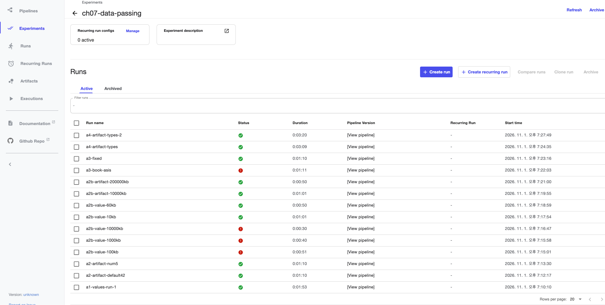
무엇이 보이나요? 14개 실행과 성공·실패 아이콘이 있습니다. 값 100kb·1000kb·10000kb와 a3-book-asis는 실패, 아티팩트 200000kb는 50초에 성공했습니다. 왜 중요한가요? 같은 내용 크기라도 전달 경로와 출력 파일 계약에 따라 결과가 달라집니다. 읽는 법: 실행 이름·Status·Duration을 함께 보세요. 오류 원인은 이 목록만으로 확정하지 않고 아래 원문 기록과 로그를 대조합니다.
| 단계·조건 | 원문 결과 | 해석 |
|---|---|---|
| A1 값 전달 | 성공, 농담22단어→Word count:22 | 문자열·정수 연결 예시, 농담 내용은 고정 기대값 아님 |
| A2 num_jokes42/5 | 성공, 539/72단어 | 디렉터리의 jokes.txt가 키 접두사로 전달 |
| A2b 값10KB/60KB | 성공 | 해당 환경에서 통과한 사례 |
| A2b 값100KB | argument list too long | 실행 인자 경로의 실패, 정확한 인자 크기 상한은 별도 확인 |
| A2b 값1MB | annotation262144바이트 초과 | 후속 파드 생성 전 객체 크기 조건에 걸림 |
| A2b 값10MB | 10240924 > 4194304 | 그 MLMD gRPC 경로의4MiB 수신 상한 |
| A2b 파일10MB/200MB | 성공 | 큰 내용이 값 전달 경로를 피함, 전송 비용은 별도 |
| A3 np.save 원문 형태 | FileNotFoundError | 자동 .npy 확장자로 지정 출력 경로와 불일치 |
| A3 파일 핸들 수정 | 성공, samples/shape 전달 | 지정 path에 실제 파일 작성 |
| A4 7종 타입 | 성공 | 타입·메트릭 metadata 등록 |
원문 실행 이름의 KB/MB 표기는 대략적인 이름입니다. size_kb * 1024는 KiB 계산이고 200000KiB는 약195.3MiB입니다. 262144·4194304바이트는 각각256KiB·4MiB입니다. 크기·직렬화 후 크기·전송 메시지 크기는 구분합니다.
⚠ 원문 정정: 1024바이트 단위를 KB로, 200000KiB를 정확한 200MB로 읽지 않습니다. 이 코드는 KiB 단위입니다. 또한 4MiB 오류는 해당 MLMD gRPC 경로에서 보고된 값이며 모든 KFP 파라미터의 상한이 아닙니다. 이미지의 오류 원인은 위 결과 표와 해당 실행 로그를 함께 보세요.
실행 명령 모음 (접속부터 A1~A4까지)
준비된 지침·주문서·점검 도구를 확인한 뒤 순서대로 비교하는 과정입니다. 파일 목록은 Python 소스·컴파일 YAML·inspect_yaml.py·submit.py, A3의 원문/수정 YAML, A4 타입 예제가 준비됐는지 보여 줍니다.
| 묶음 | 목적 |
|---|---|
| 접속·파일 목록 | 원격 실행 환경과 필요한 파일 확인 |
| A1 | 컴파일→구조 점검→값 파이프라인 제출 |
| A2 | 농담 수를 바꾸며 디렉터리 전달 확인 |
| A2b | 동일 내용의 값/파일 전달과 크기 비교 |
| A3 | np.save의 지정 경로 문제와 수정본 비교 |
| A4 | 타입·메트릭 metadata 등록 확인 |
경로·실행기는 <PROJECT_DIR>·<PYTHON_EXECUTABLE>, 접속은 <SSH_USER>·<REMOTE_HOST>, KFP 주소는 <KFP_SERVICE_URL>로 바꿉니다. 파일 목록 출력은 실행할 명령이 아닙니다. 이론 설명의 명령 목적과 별도 핸즈온 실행 절차를 구분하세요.
확인 가이드: 무엇을 어디서 볼지
원인이 다른 문에 걸렸다면 점검 위치도 달라집니다. FINAL=·태스크 상태·로그는 종료 원인, YAML은 선언, 저장소는 실제 내용, MLMD는 타입·계보를 보여 줍니다.
| 확인 대상 | 도구·위치 | 볼 것 |
|---|---|---|
| 태스크 실행 | submit.py·KFP UI·Error/Traceback | 실패 태스크와 원인 |
| YAML | inspect_yaml.py | pip 블록·임시 파일·함수 소스·schemaTitle |
| 객체 저장물 | list_minio.py·show_artifacts.py | output_jokes/jokes.txt, HTML/Markdown/JSON |
| MLMD | Artifact와 Type 기록 | URI·system.*·metadata |
| 값100KB 실패 | 파드 이벤트 | argument list too long |
| 값1MB 실패 | Workflow 메시지·후속 파드 | annotation 크기 초과·파드 미생성 |
| 값10MB 실패 | ResourceExhausted 로그 | gRPC 메시지 크기 |
실습 뒤 정리할 것
원문은14개 run·완료 파드·200MB로 이름 붙인 저장물이 남아 있다고 기록합니다. 실행 메타데이터·파드·객체 저장물은 별도 자원입니다. 보존할 실험 기록과 삭제할 파일을 구분해 정리하며, 완료 파드 제거만으로 모든 아티팩트가 삭제된다고 생각하지 마세요.
7.2.1 시나리오 1: 다운스트림 컴포넌트에 단순 값 전달하기
세 사람이 쪽지를 순서대로 건네는 모습을 떠올려 보세요. 첫 사람은 농담을 쓰고, 둘째는 단어 수를 세고, 셋째는 결과 문장을 만듭니다. 다운스트림은 이처럼 앞 단계의 결과를 받아 일하는 뒤 단계입니다. 여기서는 문자열 → 정수 → 문자열을 전달합니다.
파이프라인을 정의할 때의 task.output은 아직 계산된 값이 아니라 나중에 받을 결과를 가리키는 연결입니다. 실제 값은 실행 시 생성되며, 뒤 작업은 앞 작업의 출력에 의존합니다.
flowchart LR A["generate_joke: 농담 문자열"] -->|"str"| B["count_words: 단어 수 계산"] B -->|"int"| C["output_result: 결과 문장"] C --> D["Word count: 정수"]
Listing 7.4 큐브플로 컴포넌트로 변환할 함수들
먼저 세 작업을 보통의 Python 함수로 표현합니다. 타입 힌트는 쪽지에 붙인 ‘문자열’ 또는 ‘정수’ 표지와 같습니다. 입력과 반환값의 종류를 명시하여 함수의 계약을 드러냅니다.
def generate_joke() -> str:
import pyjokes
return pyjokes.get_joke()
def count_words(input: str) -> int:
return len(input.split())
def output_result(count: int) -> str:
return f"Word count: {count}"
get_joke()는 호출 한 번에 농담 문자열 하나를 반환합니다. split()은 공백 기준으로 나누므로 여기의 단어 수는 언어학적 분석 결과가 아니라 공백으로 구분된 항목 수입니다. 마지막 함수는 메시지를 반환하며, 별도의 print()가 없으므로 표준 출력에 메시지를 찍는 함수와 구별해야 합니다.
Listing 7.5 큐브플로 컴포넌트와 파이프라인 정의
작업자가 들고 다닐 작업 안내서를 붙이는 것이 @dsl.component라면, 작업 순서표를 만드는 것이 @dsl.pipeline입니다. 데코레이터는 함수 정의에 추가 동작을 붙이는 Python 문법입니다. 아래 정의를 컴파일하면 실행 환경과 연결 관계를 담은 YAML 파일이 만들어집니다.
from kfp import compiler, dsl
@dsl.component(
base_image="python:3.11",
packages_to_install=["pyjokes"],
)
def generate_joke() -> str:
import pyjokes
return pyjokes.get_joke()
@dsl.component(base_image="python:3.11")
def count_words(input: str) -> int:
return len(input.split())
@dsl.component(base_image="python:3.11")
def output_result(count: int) -> str:
return f"Word count: {count}"
@dsl.pipeline(name="joke-pipeline")
def joke_pipeline():
joke_task = generate_joke()
count_task = count_words(input=joke_task.output)
result_task = output_result(count=count_task.output)
compiler.Compiler().compile(
pipeline_func=joke_pipeline,
package_path="joke_pipeline.yaml",
)
base_image는 작업실의 기본 도구 세트이고, packages_to_install은 추가 도구 목록입니다. 패키지를 이미지에 미리 넣는 방법도 있습니다. 위 코드는 구조를 배우는 예이며 반복 실행의 재현성을 높이려면 패키지 버전과 이미지 digest를 고정하세요. 컴파일은 실행 요청과 별개입니다.
⚠ 원문 정정: 런타임에 필요한 의존성을 함수 내부에서 가져오는 규칙은 이 경량 Python 컴포넌트의 코드 추출 방식에 해당합니다. 컴파일러와 데코레이터를 위한 import까지 함수 안으로 옮길 필요는 없습니다. 또한 @dsl.component는 컴포넌트를, @dsl.pipeline은 파이프라인을 만듭니다.
⚠ 원문 정정: 함수와 작업 변수에 같은 output_result 이름을 쓰면 지역 변수 가림 때문에 UnboundLocalError가 날 수 있습니다. count_word와 count_word_op처럼 정의와 호출 이름이 다르면 NameError가 납니다. 여기서는 함수 이름을 일치시키고 작업 변수를 joke_task, count_task, result_task로 구분했습니다.
참고: 큐브플로 컴포넌트의 패키지 관리 규칙
작업장에 도구를 공급하는 방법은 미리 비치하기, 시작할 때 배송받기, 작업 중 직접 사오기입니다. 컴포넌트의 패키지도 각각 이미지에 포함하기, packages_to_install로 설치하기, 함수에서 설치 명령 실행하기에 대응합니다.
| 방식 | 동작 | 이 문서에서의 쓰임과 주의 |
|---|---|---|
| 이미지에 포함 | 이미지 빌드 시 의존성 설치 | 여러 실행에 같은 환경을 제공하기 좋습니다. base_image가 이미지를 선택할 뿐 패키지를 자동으로 넣어 주지는 않습니다. |
| packages_to_install | 실행 준비 단계에서 pip로 설치 | 농담 함수의 pyjokes를 준비합니다. 네트워크와 패키지 저장소 접근이 필요합니다. |
| 함수에서 설치 | subprocess 등으로 설치 명령 호출 | 동적 요구가 있을 때 고려하되 실패 원인과 환경 변경을 추적하기 어렵습니다. |
Python 표준 라이브러리는 별도 pip 설치가 필요하지 않습니다. 외부 패키지는 이미지에 이미 들어 있다면 중복 설치할 필요가 없습니다. 컴파일하는 노트북 환경과 작업 컨테이너 환경은 별개이므로 노트북에서 import가 성공했다고 작업 컨테이너에서도 성공하는 것은 아닙니다.
⚠ 원문 정정: 원문의 ‘Python 3.5 이상’과 ‘현재 Python에 대응하는 기본 이미지’ 설명은 이 실습의 SDK 2.9.0에 맞지 않습니다. 해당 SDK의 Python 요구 범위는 3.8 이상 3.13 미만이며, 경량 컴포넌트 기본 base_image는 고정된 python:3.8입니다. 다른 SDK 버전에서는 해당 버전의 요구 조건을 확인하세요. 원문의 pyjokeys는 pyjokes의 오기입니다.
앞 예제에서 python:3.11을 명시한 이유는 기본값에 기대지 않고 작업 환경을 분명히 하기 위해서입니다. 뒤에 보는 원문 저장소 YAML에는 python:3.9, kfp==2.11.0이 나타납니다. 이는 SDK 2.9.0으로 수행한 앞의 데이터 크기 실험과 구별해야 할 별도 산출물입니다.
joke_pipeline.yaml: 컴파일된 파이프라인 살펴보기
작업 계약서, 작업장 설비표, 작업 순서표를 따로 읽으면 복잡한 문서를 이해하기 쉽습니다. KFP YAML에서도 components, deploymentSpec, root.dag.tasks를 이 세 역할로 나누어 보세요.
⚠ 원문 정정: 원문의 접이식 제목에 적힌 joke_pipelinee.yaml은 파일명 오기입니다. 연결된 공개 저장소의 실제 파일명과 앞의 컴파일 출력은 joke_pipeline.yaml입니다.
components: 입력과 출력의 계약
comp-count-words의 문자열 입력은 STRING, 정수 출력은 NUMBER_INTEGER로 표현됩니다. 다음은 핵심 구조를 읽기 위한 발췌이며 이 조각만으로 전체 파이프라인을 제출하는 예제는 아닙니다.
components:
comp-count-words:
executorLabel: exec-count-words
inputDefinitions:
parameters:
input:
parameterType: STRING
outputDefinitions:
parameters:
Output:
parameterType: NUMBER_INTEGER
deploymentSpec: 실행자의 컨테이너 설정
실행자는 계약서대로 일을 수행하는 담당자입니다. executorLabel이 실행자 이름을 연결하고, container.image는 기본 이미지, command는 시작 명령, args는 그 명령에 넘기는 인자를 지정합니다.
deploymentSpec:
executors:
exec-count-words:
container:
image: python:3.9
args:
- --executor_input
- '{{$}}'
- --function_to_execute
- count_words
'{{$}}'는 KFP 실행 시 입력·출력 정보를 채우는 자리입니다. 화면의 문자열을 실제 농담으로 직접 바꾸는 방식이 아닙니다. --function_to_execute는 임시 모듈에서 어떤 함수를 부를지 지정합니다.
root.dag.tasks: 작업 사이의 연결
작업 정의는 어떤 컴포넌트를 사용하고 어느 선행 작업의 출력을 입력으로 받을지 정합니다. generate-joke 출력 → count-words 입력 → output-result 입력이 이 예제의 DAG입니다. DAG는 순환이 없는 방향 그래프이므로 작업이 자기 결과를 기다리는 고리를 만들지 않습니다.
원문 파일 전체는 joke_pipeline.yaml에서 볼 수 있습니다. 컴파일 버전에 따라 세부 필드와 생성된 명령 문자열이 달라질 수 있으므로 작성한 Python 정의와 함께 비교하세요.
첫 번째 command 블록: Python 환경 구성
작업을 시작하기 전에 도구가 있는지 확인하고 없는 도구를 준비하는 단계입니다. 생성된 셸 명령은 pip를 찾고 KFP 실행에 필요한 패키지를 설치한 다음 다음 명령으로 제어를 넘깁니다. 아래는 역할을 읽기 쉽게 정리한 셸 발췌입니다.
if ! command -v pip >/dev/null 2>&1; then
python3 -m ensurepip || python3 -m ensurepip --user || exit 1
fi
PIP_DISABLE_PIP_VERSION_CHECK=1 python3 -m pip install \
--quiet --no-warn-script-location \
'kfp==2.11.0' --no-deps \
'typing-extensions>=3.7.4,<5; python_version<"3.9"' \
&& "$0" "$@"
--quiet는 출력을 줄이고 --no-warn-script-location은 설치된 실행 파일의 경로 경고를 줄입니다. --no-deps는 의존 패키지 자동 설치를 생략하므로 일반적인 수동 설치 명령에 무심코 복사하지 마세요. typing-extensions 뒤 조건은 Python 버전에 따라 설치 여부를 결정하는 환경 마커입니다.
sh -c에서 $0과 $@는 생성된 명령 배열의 다음 요소를 이어 실행하는 데 쓰입니다. 이 발췌만 터미널에 실행하면 다음 단계가 없으므로 완성된 실행 절차가 되지 않습니다.
⚠ 원문 정정: 원문 첫 command 블록의 줄바꿈과 YAML 목록 표기가 흐트러져 있습니다. 셸 조건문과 명령의 역할을 나누어 읽어야 하며, 그대로 복사할 실행 명령으로 취급하면 안 됩니다. 예제의 kfp==2.11.0은 앞의 SDK 2.9.0 실험과 다른 버전입니다.
두 번째 command 블록: 컴포넌트 준비와 실행
배송된 작업 안내서를 임시 책상에 펼쳐 놓고 담당자를 부르는 단계입니다. 여기서 임시 디렉터리를 만들고 함수 소스 문자열을 Python 파일로 기록한 후 KFP 런타임을 호출합니다.
program_path=$(mktemp -d)
printf "%s" "$0" > "$program_path/ephemeral_component.py"
_KFP_RUNTIME=true python3 -m kfp.dsl.executor_main \
--component_module_path "$program_path/ephemeral_component.py" \
"$@"
이 블록 역시 생성된 sh -ec 명령 배열 안에서 동작하는 발췌입니다. $0에 함수 소스가, $@에 실행 인자가 전달됩니다. mktemp -d는 임시 디렉터리를 만들며 --component_module_path는 실행자가 읽을 모듈 위치를 가리킵니다. 임시 코드 파일은 입력 데이터셋이나 영구 아티팩트 저장소와 다른 용도입니다.
실제 Python 구현
작업의 핵심은 아래의 짧은 함수입니다. Python 정의에서는 @dsl.component를 붙이지만 임시 실행 모듈에는 추출된 함수와 필요한 import가 들어갑니다. 데코레이터를 붙이는 작성 단계와 함수가 호출되는 실행 단계를 구별하세요.
def count_words(input: str) -> int:
return len(input.split())
런타임은 실행 입력을 읽어 문자열 인자를 만들고, 반환된 정수를 출력 파라미터로 기록합니다. 함수가 작아도 주변 명령이 긴 이유는 이 준비와 결과 기록을 함께 담당하기 때문입니다.
통합 코드의 세 부분과 각 섹션의 역할
입력·출력 명세를 포함한 컴포넌트 정의
이 부분은 접수 창구의 양식입니다. 입력 이름·타입, 출력 이름·타입, 연결할 실행자를 선언합니다. 문자열을 받는 함수에 다른 종류의 출력을 연결하지 않도록 계약을 드러냅니다.
컨테이너 설정·명령어·Python 구현을 담은 배포 명세
이 부분은 작업실의 설비와 작업 안내서입니다. 이미지, 설치 명령, 임시 모듈 소스, 함수 선택 인자를 담습니다. 패키지 설치 실패는 이 준비 단계에서, 함수 계산 실패는 실제 구현에서 발생할 수 있습니다.
연결 방식을 나타내는 파이프라인 DAG 작업 정의
이 부분은 전달 순서표입니다. 작업 이름과 컴포넌트 참조, 선행 작업 출력의 연결을 정합니다. 인터페이스와 실행 환경이 맞더라도 연결할 출력 이름을 틀리면 의도한 흐름이 되지 않습니다.
각 섹션은 고유한 역할을 담당합니다
| 섹션 | 담당하는 질문 | 농담 예제 |
|---|---|---|
| 컴포넌트 정의 | 무엇을 받고 무엇을 내놓나요? | 문자열 입력, 정수 출력 |
| 배포 명세 | 어디서 어떤 코드로 계산하나요? | Python 이미지에서 count_words 실행 |
| DAG 작업 정의 | 누구의 결과를 누구에게 넘기나요? | 농담 출력이 단어 수 입력으로 연결 |
flowchart TB C["컴포넌트 정의: 계약"] -->|"executorLabel"| E["배포 명세: 실행 환경과 코드"] T["DAG 작업: 순서와 데이터 연결"] -->|"componentRef"| C I["앞 작업 출력"] --> T E --> O["반환값을 출력 파라미터로 기록"]
Listing 7.6 KFP SDK: 코드 주입 방식으로 파일 생성
배송 상자에 작업 안내서와 재료를 함께 넣을 수 있지만 안내서와 재료는 다른 물건입니다. 코드 주입은 실행할 함수 소스를 컨테이너에 전달하는 방법이며, 데이터 전달은 그 함수의 입력과 출력을 작업 사이에서 연결하는 방법입니다.
Listing 7.6의 배포 명세 읽기
원문의 긴 YAML은 deploymentSpec.executors.exec-count-words.container 아래에서 환경 준비 명령, 임시 파일 생성 명령, 함수 소스를 한데 보여 줍니다. 핵심은 다음 순서입니다.
- Python 이미지에서 필요한 런타임을 준비합니다.
- YAML에 담긴 소스를
ephemeral_component.py라는 임시 파일에 기록합니다. - 실행 입력을 읽고
count_words의 문자열 인자를 구성합니다. - 함수가 반환한 정수를 출력 파라미터로 기록합니다.
flowchart LR S["YAML 속 함수 소스"] --> F["임시 Python 모듈"] F --> X["KFP 실행자"] P["실행 입력의 파라미터"] --> X X --> R["count_words 호출"] R --> O["반환값 직렬화와 출력 기록"] O --> D["뒤 작업의 입력"]
⚠ 원문 정정: ‘큐브플로가 데이터를 전달하는 방식은 코드 인젝션’이라는 설명은 코드 배송과 데이터 이동을 혼동합니다. 경량 컴포넌트의 함수 소스가 임시 모듈로 전달되는 것이 코드 주입입니다. 단순 값은 파라미터 직렬화와 출력 기록으로, 큰 파일은 아티팩트 저장소와 경로·URI 연결로 전달합니다.
출력값을 캡처하는 런타임과 헬퍼 함수
직렬화는 계산 결과에 배송 가능한 표준 포장을 씌우는 일입니다. 정수나 문자열을 실행 시스템이 읽을 형식으로 기록한 뒤, 다음 작업에서 그 형식을 다시 Python 값으로 읽습니다. 출력 이름과 타입에 관한 계약은 컴파일된 명세에 있고, 실제 값 기록은 런타임이 담당합니다.
원문의 ‘나머지 코드는 모두 주입된 코드’라는 표현보다는 함수 소스, 실행 명령, 별도로 설치되는 KFP 런타임을 구별하는 편이 정확합니다. YAML 안에서 출력 처리용 헬퍼가 모두 함수 옆에 펼쳐져 있어야 하는 것은 아닙니다. SDK 버전에 따라 런타임 패키지가 그 역할을 맡습니다.
단순 값에서 대용량 데이터로
짧은 농담이나 계산된 단어 수는 파라미터로 연결하기 좋습니다. 수백 GiB 데이터셋은 값 자체를 명령이나 실행 메타데이터에 넣는 대신 저장소에 두고 아티팩트로 연결하는 방향을 고려하세요. URI는 데이터의 주소이며 모든 작업에 같은 로컬 경로가 있다는 뜻은 아닙니다.
원문은 큰 데이터셋을 다음 절에서 다루겠다고 예고하며 끝납니다. 이 문서에 주어진 본문 범위는 7.2.1까지입니다. 앞의 데이터 전달 실험에서 파라미터와 아티팩트의 차이, 환경에 따른 크기 제한을 함께 살펴볼 수 있습니다.
이 문서를 읽을 때 알아 둘 점
각 절의 노란색 "원문 정정" 상자는 원문 설명 중 사실과 달라 바로잡은 내용입니다. 이 장의 근거 링크는 문서 맨 끝 "참고자료"에 모았습니다.
- 원문은 7.2.1까지만 있습니다. Notion 원문이 "시나리오 1: 다운스트림 컴포넌트에 단순 값 전달하기"에서 끝납니다. 7.2.2 이후는 원문에 없으므로 이 문서에도 없습니다.
- 성공·실패 수치는 그 환경의 관찰입니다. 원문에서 보고한 실행 결과(예: 큰 값을 값으로 넘길 때의 오류)는 모든 클러스터에서 같게 나온다는 뜻이 아닙니다. SDK 버전, 클러스터, 저장소, 인자 크기에 따라 달라질 수 있습니다.
- 설치 버전에 맞춰 확인하세요. 메뉴 ConfigMap과 웹훅 필드는 Kubeflow 1.9~1.11의 공식 설정을 기준으로 설명했습니다. 실제 설치 버전이 다르면 ConfigMap, CRD, 컨트롤러 구현을 다시 확인하세요.
- 다루지 않은 것. "고급 스케줄링" 과제의 본문, 더는 열리지 않는 옛 예제 README(examples.k8s.io) 7개, GPU taint가 자동으로 생성되는지 여부는 근거가 없어 단정하지 않았습니다. 제거된 저장소 플러그인의 현재 대체 설정은 공급자의 CSI 문서로 확인하세요.
참고 자료
- 영화 추천 프로젝트
- 농담 파이프라인 명세
- 고급 스케줄링 과제 (Notion 링크)
- 쿠버네티스 API 규약: resources
- 쿠버네티스 API 규약: types-kinds
- gRPC 서비스 건강 점검
- Windows gMSA 인증
- 컨테이너 포트 선언 논의 #108255
- 컨테이너 자원 관리
- 컨테이너 수명주기 훅: container-hooks
- 컨테이너 이미지
- 컨테이너 이미지: updating-images
- 쿠버네티스 객체 이름: names
- 파드 수명주기: container-probes
- 컨테이너 보안 컨텍스트
- 컨테이너 command·args 설정: running-a-command-in-a-shell
- 쿠버네티스 PV·PVC: access-modes-1
- 쿠버네티스 PV·PVC: class-1
- 쿠버네티스 PV·PVC: persistentvolumeclaims
- 쿠버네티스 PV·PVC: resources
- 쿠버네티스 볼륨
- 쿠버네티스 볼륨: awselasticblockstore
- 쿠버네티스 볼륨: emptydir
- 쿠버네티스 볼륨: gcepersistentdisk
- 쿠버네티스 볼륨: hostpath
- 쿠버네티스 볼륨: iscsi
- 쿠버네티스 볼륨: nfs
- 쿠버네티스 볼륨: rbd
- 쿠버네티스 볼륨: secret
- 옛 저장소 예제: mysql-cinder-pd — 404
- 옛 저장소 예제: volumes/cephfs — 404: how-to-use-it
- 옛 저장소 예제: volumes/glusterfs — 404
- 옛 저장소 예제: volumes/glusterfs — 404: create-a-pod
- 옛 저장소 예제: volumes/iscsi — 404
- 옛 저장소 예제: volumes/rbd — 404
- 옛 저장소 예제: volumes/rbd — 404: how-to-use-it
- 쿠버네티스 볼륨
- Jupyter Web App 메뉴 설정 (v1.9.0)
- Jupyter Web App 메뉴 설정 (v1.10.0)
- Jupyter Web App 메뉴 설정 (v1.11.0)
- Notebook 컨트롤러 구현 (v1.11.0)
- PodDefault 공식 사용 안내 (v2.0.0)
- KFP 파라미터 타입 매핑 (sdk-2.9.0)
- KFP 경량 컴포넌트 생성과 기본 이미지 (sdk-2.9.0)
- KFP 클라이언트 (sdk-2.9.0)
- KFP 데이터 타입
- KFP 아티팩트
- 쿠버네티스 노드 배치
- 쿠버네티스 taint와 toleration
- 영화 추천 데이터 준비 코드
- KFP 파라미터
- annotation 총량 검사
- PodDefault 웹훅 구현 (v2.0.0)
- Istio 사이드카 주입
- PodDefault API 타입 (v2.0.0)
- NVIDIA GPU Operator 설치 안내
- KFP 아티팩트·메트릭 타입 (sdk-2.9.0)
- KFP SDK Python 지원 조건 (sdk-2.9.0)
- pip 사용자 설치 안내: user-installs